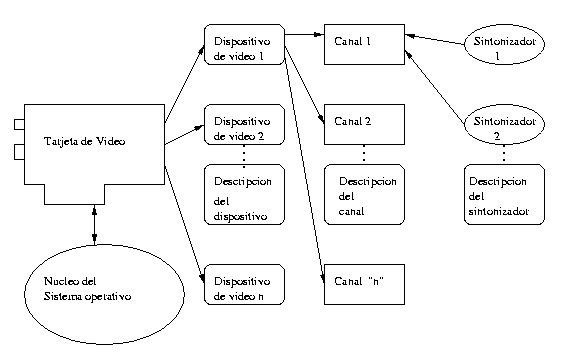
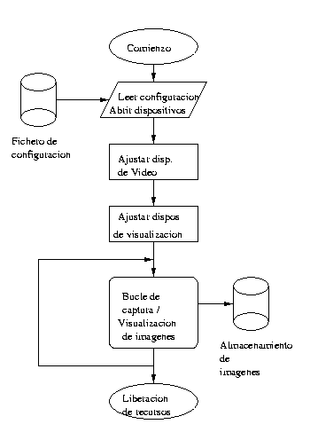

VideoForLinux: Modelo de Programación
Copyright
Este artículo es Copyright 1998 de Juan Antonio Martínez Castaño y se
distribuye bajo las siguientes condiciones:
- Su distribución mediante medios electrónicos es libre, siempre y
cuando se conserve el texto íntegro y en su formato HTML original, haciendo
especial mención a la conservación del mensaje de copyright
- El autor y dueño del copyright cede los derechos de publicación impresa
a Prensa Técnica S.L., autorizando a ésta a realizar las modificaciones al
texto que considere oportunas para su publicación
- La distribución o copia, total o parcial, en cualquier medio impreso por
parte ajena a Prensa Técnica S.L. Está expresamente prohibida
- Ningún particular podrá publicar este fichero en un servidor Web de acceso
público sin el consentimiento expreso del autor y de Prensa Técnica S.L.
Indice
Entradilla
En el número anterior de Linux Actual describimos cómo instalar y
configurar desde linux el soporte para tarjetas de televisión, radio, etc, así
como diverso software que utiliza estas capacidades. En el presente artículo
profundizaremos en el API de VideoForLinux, describiendo su funcionamiento,
explicando la metodología de programación y analizando ejemplos concretos
Antes de empezar, vamos a definir una serie de términos y conceptos:
- Video For Linux asigna a cada tarjeta de vídeo una serie de
entradas en el /dev:
- Una entrada /dev/videoXX por cada dispositivo capaz de manejar
señales de vídeo ( con o sin audio asociado )
- Una entrada /dev/radioXX por cada dispositivo capaz de manejar
señales de radio
- Si la tarjeta maneja teletexto, tendrá tambien una entrada
/dev/vtxXX por cada señal de teletexto independiente que sea capaz
de manejar
- Del mismo modo, si la tarjeta soporta intercast/telecast,
tendremos una entrada en /dev/vbi
|
Cada dispositivo de vídeo tiene asociado uno o varios canales, que a su vez
pueden tener o no dispositivos de sintonización
|
|---|
| | |
- Nótese que no se asigna una entrada por canal, sino por dispositivo.
Esto es: en una tarjeta de televisión típica, que posee una entrada
de sintonizador, una entrada de SVHS y una entrada de vídeo
compuesto, no encontraremos -salvo tarjetas extraordinariamente
caras- más que un solo dispositivo capaz de manejar vídeo.
- Es necesario pues discriminar entre manejadores de vídeo y
canales. Cada tarjeta puede tener uno o más manejadores de
vídeo, y cada manejador de vídeo puede tener uno o más canales
- Además, cada canal puede tener uno o más -o incluso ningúno-
sintonizadores; esto es, dispositivos capaz de ajustar la
señal que se recibe por un canal dado
- Cada dispositivo posee una serie de capacidades asociadas. Del
mismo modo cada canal de cada dispositivo tiene sus peculiaridades,
y -rizando el rizo- cada sintonizador de cada canal de cada dispositivo
tiene sus características.
- Desgraciadamente el API actual de VideoForLinux no permite más que
un desarrollo "piramidal" de capacidades: si un dispositivo, por
ejemplo, maneja un formato X de buffer, todos los canales asociados
a ese dispositivo heredan dicho formato. VideoForLinux 2 independiza
los conceptos manteniendo la asociación, pero hasta que no sea
el API estándard ( a partir de la versión 2.3.X del núcleo ), nos
tendremos que limitar a lo que hay... aunque en opinión del autor
esto no es en absoluto un handicap para su correcto funcionamiento.
Lo que hará verdaderamente funcional a V4L-2 será la posibilidad de
manejar dispositivos de procesado de señal y de salida de vídeo
La figura 1 ilustra las diversas dependencias:
|

|
| Figura 1: Modelo de dependencias en el API de VideoForLinux |
|---|
Aunque el sintonizador depende de cada canal de vídeo, la implementación
en el núcleo puede realizarse -y de hecho se realiza- mediante un módulo
independiente. Así, por ejemplo en el caso del driver bttv, existe un
módulo tuner.o que se instala cuando uno de los canales
existentes en la tarjeta corresponde a una señal de televisión sintonizable.
( por el contrario, este módulo no se instala si la tarjeta no dispone de
sintonizador, como pueda ser en el caso de una tarjeta de videoconferencia )
Pasaremos a continuación a describir en detalle las estructuras y
funciones definidas en el API de VideoForLinux
Hagamos caso al dicho "Use the Source, Luke", y procedamos a analizar
el fichero de definición del API de VideoForLinux: el fichero "videodev.h".
El listado 1 ilustra la versión de este fichero tal y como aparece en la
versión del núcleo linux-2.2.1-ac7
#ifndef __LINUX_VIDEODEV_H
#define __LINUX_VIDEODEV_H
#include
#include
#ifdef __KERNEL__
#if LINUX_VERSION_CODE >= 0x020100
#include
#endif
struct video_device
{
char name[32];
int type;
int hardware;
int (*open)(struct video_device *, int mode);
void (*close)(struct video_device *);
long (*read)(struct video_device *, char *, unsigned long, int noblock);
/* Do we need a write method ? */
long (*write)(struct video_device *, const char *, unsigned long, int noblock);
#if LINUX_VERSION_CODE >= 0x020100
unsigned int (*poll)(struct video_device *, struct file *, poll_table *);
#endif
int (*ioctl)(struct video_device *, unsigned int , void *);
int (*mmap)(struct video_device *, const char *, unsigned long);
int (*initialize)(struct video_device *);
void *priv; /* Used to be 'private' but that upsets C++ */
int busy;
int minor;
};
extern int videodev_init(void);
#define VIDEO_MAJOR 81
extern int video_register_device(struct video_device *, int type);
#define VFL_TYPE_GRABBER 0
#define VFL_TYPE_VBI 1
#define VFL_TYPE_RADIO 2
#define VFL_TYPE_VTX 3
extern void video_unregister_device(struct video_device *);
#endif
#define VID_TYPE_CAPTURE 1 /* Can capture */
#define VID_TYPE_TUNER 2 /* Can tune */
#define VID_TYPE_TELETEXT 4 /* Does teletext */
#define VID_TYPE_OVERLAY 8 /* Overlay onto frame buffer */
#define VID_TYPE_CHROMAKEY 16 /* Overlay by chromakey */
#define VID_TYPE_CLIPPING 32 /* Can clip */
#define VID_TYPE_FRAMERAM 64 /* Uses the frame buffer memory */
#define VID_TYPE_SCALES 128 /* Scalable */
#define VID_TYPE_MONOCHROME 256 /* Monochrome only */
#define VID_TYPE_SUBCAPTURE 512 /* Can capture subareas of the image */
struct video_capability
{
char name[32];
int type;
int channels; /* Num channels */
int audios; /* Num audio devices */
int maxwidth; /* Supported width */
int maxheight; /* And height */
int minwidth; /* Supported width */
int minheight; /* And height */
};
struct video_channel
{
int channel;
char name[32];
int tuners;
__u32 flags;
#define VIDEO_VC_TUNER 1 /* Channel has a tuner */
#define VIDEO_VC_AUDIO 2 /* Channel has audio */
__u16 type;
#define VIDEO_TYPE_TV 1
#define VIDEO_TYPE_CAMERA 2
__u16 norm; /* Norm set by channel */
};
struct video_tuner
{
int tuner;
char name[32];
ulong rangelow, rangehigh; /* Tuner range */
__u32 flags;
#define VIDEO_TUNER_PAL 1
#define VIDEO_TUNER_NTSC 2
#define VIDEO_TUNER_SECAM 4
#define VIDEO_TUNER_LOW 8 /* Uses KHz not MHz */
#define VIDEO_TUNER_NORM 16 /* Tuner can set norm */
#define VIDEO_TUNER_STEREO_ON 128 /* Tuner is seeing stereo */
__u16 mode; /* PAL/NTSC/SECAM/OTHER */
#define VIDEO_MODE_PAL 0
#define VIDEO_MODE_NTSC 1
#define VIDEO_MODE_SECAM 2
#define VIDEO_MODE_AUTO 3
__u16 signal; /* Signal strength 16bit scale */
};
struct video_picture
{
__u16 brightness;
__u16 hue;
__u16 colour;
__u16 contrast;
__u16 whiteness; /* Black and white only */
__u16 depth; /* Capture depth */
__u16 palette; /* Palette in use */
#define VIDEO_PALETTE_GREY 1 /* Linear greyscale */
#define VIDEO_PALETTE_HI240 2 /* High 240 cube (BT848) */
#define VIDEO_PALETTE_RGB565 3 /* 565 16 bit RGB */
#define VIDEO_PALETTE_RGB24 4 /* 24bit RGB */
#define VIDEO_PALETTE_RGB32 5 /* 32bit RGB */
#define VIDEO_PALETTE_RGB555 6 /* 555 15bit RGB */
#define VIDEO_PALETTE_YUV422 7 /* YUV422 capture */
#define VIDEO_PALETTE_YUYV 8
#define VIDEO_PALETTE_UYVY 9 /* The great thing about standards is ... */
#define VIDEO_PALETTE_YUV420 10
#define VIDEO_PALETTE_YUV411 11 /* YUV411 capture */
#define VIDEO_PALETTE_RAW 12 /* RAW capture (BT848) */
#define VIDEO_PALETTE_YUV422P 13 /* YUV 4:2:2 Planar */
#define VIDEO_PALETTE_YUV411P 14 /* YUV 4:1:1 Planar */
#define VIDEO_PALETTE_YUV420P 15 /* YUV 4:2:0 Planar */
#define VIDEO_PALETTE_YUV410P 16 /* YUV 4:1:0 Planar */
#define VIDEO_PALETTE_PLANAR 13 /* start of planar entries */
#define VIDEO_PALETTE_COMPONENT 7 /* start of component entries */
};
struct video_audio
{
int audio; /* Audio channel */
__u16 volume; /* If settable */
__u16 bass, treble;
__u32 flags;
#define VIDEO_AUDIO_MUTE 1
#define VIDEO_AUDIO_MUTABLE 2
#define VIDEO_AUDIO_VOLUME 4
#define VIDEO_AUDIO_BASS 8
#define VIDEO_AUDIO_TREBLE 16
char name[16];
#define VIDEO_SOUND_MONO 1
#define VIDEO_SOUND_STEREO 2
#define VIDEO_SOUND_LANG1 4
#define VIDEO_SOUND_LANG2 8
__u16 mode;
__u16 balance; /* Stereo balance */
__u16 step; /* Step actual volume uses */
};
struct video_clip
{
__s32 x,y;
__s32 width, height;
struct video_clip *next; /* For user use/driver use only */
};
struct video_window
{
__u32 x,y; /* Position of window */
__u32 width,height; /* Its size */
__u32 chromakey;
__u32 flags;
struct video_clip *clips; /* Set only */
int clipcount;
#define VIDEO_WINDOW_INTERLACE 1
#define VIDEO_CLIP_BITMAP -1
/* bitmap is 1024x625, a '1' bit represents a clipped pixel */
#define VIDEO_CLIPMAP_SIZE (128 * 625)
};
struct video_capture
{
__u32 x,y; /* Offsets into image */
__u32 width, height; /* Area to capture */
__u16 decimation; /* Decimation divder */
__u16 flags; /* Flags for capture */
#define VIDEO_CAPTURE_ODD 0 /* Temporal */
#define VIDEO_CAPTURE_EVEN 1
};
struct video_buffer
{
void *base;
int height,width;
int depth;
int bytesperline;
};
struct video_mmap
{
unsigned int frame; /* Frame (0 - n) for double buffer */
int height,width;
unsigned int format; /* should be VIDEO_PALETTE_* */
};
struct video_key
{
__u8 key[8];
__u32 flags;
};
#define VIDEO_MAX_FRAME 32
struct video_mbuf
{
int size; /* Total memory to map */
int frames; /* Frames */
int offsets[VIDEO_MAX_FRAME];
};
#define VIDEO_NO_UNIT (-1)
struct video_unit
{
int video; /* Video minor */
int vbi; /* VBI minor */
int radio; /* Radio minor */
int audio; /* Audio minor */
int teletext; /* Teletext minor */
};
#define VIDIOCGCAP _IOR('v',1,struct video_capability) /* Get capabilities */
#define VIDIOCGCHAN _IOWR('v',2,struct video_channel) /* Get channel info (sources) */
#define VIDIOCSCHAN _IOW('v',3,struct video_channel) /* Set channel */
#define VIDIOCGTUNER _IOWR('v',4,struct video_tuner) /* Get tuner abilities */
#define VIDIOCSTUNER _IOW('v',5,struct video_tuner) /* Tune the tuner for the current channel */
#define VIDIOCGPICT _IOR('v',6,struct video_picture) /* Get picture properties */
#define VIDIOCSPICT _IOW('v',7,struct video_picture) /* Set picture properties */
#define VIDIOCCAPTURE _IOW('v',8,int) /* Start, end capture */
#define VIDIOCGWIN _IOR('v',9, struct video_window) /* Set the video overlay window */
#define VIDIOCSWIN _IOW('v',10, struct video_window) /* Set the video overlay window */
/* passes clip list for hardware smarts , chromakey etc */
#define VIDIOCGFBUF _IOR('v',11, struct video_buffer) /* Get frame buffer */
#define VIDIOCSFBUF _IOW('v',12, struct video_buffer) /* Set frame buffer - root only */
#define VIDIOCKEY _IOR('v',13, struct video_key) /* Video key event - to dev 255 is to all */
/* cuts capture on all DMA windows with this key (0xFFFFFFFF == all) */
#define VIDIOCGFREQ _IOR('v',14, unsigned long) /* Set tuner */
#define VIDIOCSFREQ _IOW('v',15, unsigned long) /* Set tuner */
#define VIDIOCGAUDIO _IOR('v',16, struct video_audio) /* Get audio info */
#define VIDIOCSAUDIO _IOW('v',17, struct video_audio) /* Audio source, mute etc */
#define VIDIOCSYNC _IOW('v',18, int) /* Sync with mmap grabbing */
#define VIDIOCMCAPTURE _IOW('v',19, struct video_mmap) /* Grab frames */
#define VIDIOCGMBUF _IOR('v', 20, struct video_mbuf) /* Memory map buffer info */
#define VIDIOCGUNIT _IOR('v', 21, struct video_unit) /* Get attached units */
#define VIDIOCGCAPTURE _IOR('v',22, struct video_capture) /* Get frame buffer */
#define VIDIOCSCAPTURE _IOW('v',23, struct video_capture) /* Set frame buffer - root only */
#define BASE_VIDIOCPRIVATE 192 /* 192-255 are private */
#define VID_HARDWARE_BT848 1
#define VID_HARDWARE_QCAM_BW 2
#define VID_HARDWARE_PMS 3
#define VID_HARDWARE_QCAM_C 4
#define VID_HARDWARE_PSEUDO 5
#define VID_HARDWARE_SAA5249 6
#define VID_HARDWARE_AZTECH 7
#define VID_HARDWARE_SF16MI 8
#define VID_HARDWARE_RTRACK 9
#define VID_HARDWARE_ZOLTRIX 10
#define VID_HARDWARE_SAA7146 11
#define VID_HARDWARE_VIDEUM 12 /* Reserved for Winnov videum */
#define VID_HARDWARE_RTRACK2 13
#define VID_HARDWARE_PERMEDIA2 14 /* Reserved for Permedia2 */
#define VID_HARDWARE_RIVA128 15 /* Reserved for RIVA 128 */
#define VID_HARDWARE_PLANB 16 /* PowerMac motherboard video-in */
#define VID_HARDWARE_BROADWAY 17 /* Broadway project */
#define VID_HARDWARE_GEMTEK 18
#define VID_HARDWARE_TYPHOON 19
#define VID_HARDWARE_VINO 20 /* Reserved for SGI Indy Vino */
/*
* Initialiser list
*/
struct video_init
{
char *name;
int (*init)(struct video_init *);
};
#endif
|
| Listado 1: fichero /usr/include/linux/videodev.h |
|---|
Lo primero que debemos hacer para manejar un dispositivo de vídeo
es -aparte de abrirlo- es saber qué funcionalidades posee y cómo las podemos
manejar. El parámetro VIDIOCGCAP de una llamada ioctl() al
dispositivo nos rellena una estructura del tipo video_capability
que nos indica:
- El nombre del interfaz
- Las capacidades del interfaz
- El número de canales de vídeo y de audio
- En el caso de que el dispositivo pueda capturar imágenes, el
tamaño máximo y mínimo en pixels de la imagen que puede capturar
El campo type de la estructura es un bitfield que nos indicará si
el dispositivo puede capturar imágenes, si tiene sintonizador, si posee
capacidades de teletexto, si es en blanco y negro o color, si puede
capturar sub-ventanas, etc
|
La estructura video_capability nos proporciona información sobre
las características de cada dispositivo de vídeo
|
|---|
| | |
Una vez vistas las capacidades del dispositivo es preciso analizar
cada canal de que dispone hasta encontrar el deseado. para ello necesitamos
invocar una llamada a ioctl() con el parámetro VIDIOCGCHAN
pasando una estructura del tipo video_channel en la que hemos
indicado el numero del canal sobre el que vamos a operar.
VIDIOCGCHAN nos proporciona información sobre:
- El número del canal
- El nombre de la entrada asociada
- El número de sintonizadores que posee dicho canal y sus tipos
- Si el canal dispone de señal de audio asociada o no
- El tipo de entrada de vídeo que maneja -en el caso de ser conocida-
Una vez conocidas las capacidades, de cada canal, una llamada a
ioctl con el parámetro VIDIOCSCHAN, nos permitirá seleccionar
el canal deseado sobre en el dispositivo escogido. Hay que hacer notar que
cada canal puede tener sus diferencias ( por ejemplo, tener o no sintonizador )
por lo que el usuario deberá guardar los datos de cada canal de manera
independiente. Lo usual ( como veremos en el ejemplo práctico ) es guardar
una estructura de manejadores asociados a cada canal, resueltos mediante
punteros a las posibles funciones asociadas; aunque en algunos casos,
como por ejemplo el sintonizar una emisora en una entrada de vídeo compuesto,
puedan ser punteros a funciones nulas
Finalmente, si el canal deseado dispone de sintonizador, otro
ioctl(), VIDIOCGTUNER nos indica las características del
sintonizador:
- Numero
- Nombre ( AM,FM,TV )
- Rango de frecuencias
- Tipo de señal ( pal, ntsc, secam, etc )
- Calidad de la señal
- Tipo de señal de audio ( mono, estéreo )
La función VIDIOCSTUNER sirve para activar el sintonizador
deseado sobre el canal activo en cada momento, y para programar el modo
de funcionamiento. Los datos se almacenan en una estructura de tipo
video_tuner. Nótese que es precisa una llamada previa a
VIDIOCSCHAN antes de poder utilizar un sintonizador
|
Es precisa la selección previa de un canal para poder ajustar el sintonizador
asociado a dicho canal
|
|---|
| | |
Bueno, ya sabemos como adivinar qué es lo que podemos hacer... vamos
ahora a manejar los dispositivos.
Normalmente, las operaciones habituales sobre un dispositivo son:
- Mapear una región de memoria ( que puede ser memoria principal,
o incluso la memoria de la tarjeta de vídeo ) donde el driver va
a volcar la información capturada de manera cíclica
- Volcar la entrada recibida en un buffer, mediante una operación
no-cíclica a través de read()
- Modificar los parámetros de la señal de vídeo: brillo, contraste,
tinte, saturación,
Para ello, necesitamos saber datos acerca de como manejar dicha
información. VideoForLinux nos proporciona dos nuevos ioctls:
VIDIOCGPICT y VIDIOCSPICT que nos dicen, y nos permiten
ajustar:
- Brillo, contraste, tinte, saturación, y nivel de grises ( en modos
de vídeo monocromos )
- Profundidad en bits de la imagen, para poder ajustar el
buffer o la pantalla a lo que el dispositivo nos es capaz de
proporcionar
- Tipo de mapa de colores. Consultando el fichero "videodev.h" vemos
la lista de posibles formatos de vídeo. Ni todos los dispositivos
soportan todos los formatos, ni mucho menos nuestras tarjetas gráficas
son capaces de manejarlos.
El programador debe llegar a un compromiso entre lo que su tarjeta
gráfica y su tarjeta de vídeo son capaces de hacer, para ajustar el formato
que más convenga. En el caso peor, esto implica que en ocasiones no se podrá
hacer un mmap() directamente sobre la pantalla, sino que habrá que
hacerlo sobre memoria principal, y de ahí mediante un proceso auxiliar, volcar
a pantalla los datos.
Una llamada a VIDIOCSPICT, con unos parámetros especificados
por el usuario en una estructura del tipo video_picture, no siempre
tiene éxito. Es preciso que el programador vuelva a invocar a VIDIOCGPICT
para ver cual ha sido el resultado final del ajuste
|
La estructura video_picture nos permite ajustar diversos parámetros
de la imagen, tales como brillo, contraste, tinte, saturación, etc
|
|---|
| | |
Nos falta todavía un dato más: es preciso decirle al dispositivo
cuál es la región sobre la que vamos a trabajar: Algunas tarjetas permiten
capturar, no solo pantallas completas, sino regiones de pantalla. Es más:
algunas, incluso permiten especificar rectángulos de imagen sobre los que
no se debe realizar captura ( clipping ), permitiendo ahorro de CPU y de
DMA. Por último podemos seleccionar capturar todos los frames, o bien
escoger frames pares o impares. De nuevo nos encontramos con una pareja
de ioctl()'s, VIDEOCGWIN y VIDIOCSWIN que nos manejan
la estructura video_window
Ya estamos terminando: una vez deducidos y ajustados los valores,sólo
nos queda invocar las "palabras mágicas":
- La función read() nos vuelca un frame a memoria.
el buffer debe estar ajustado a las condiciones que hemos programado.
Nótese que no todas las tarjetas soportan dicha función
- Otro ioctl(), como no podía ser de otra forma, denominado
VIDEOCCAPTURE al que pasamos un puntero a un entero que puede
ser o no nulo nos arrancará o parará respectivamente la captura de
la imagen. El buffer utilizado se inicializa mediante el par de
ioctl()'s VIDIOCSBUF y VIDIOCGBUF, que actúan
sobre una estructura de tipo video_buffer
|
Para capturar imágenes podemos selecionar dos modos de trabajo: mediante la
función read(), o bien mapeando el vídeo en una región de memoria de
nuestro sistema
|
|---|
| | |
Podemos resumir aquí los pasos que ha de seguir el programador
para manejar con éxito su tarjeta de vídeo:
- Abrir el dispositivo deseado
- Seleccionar un canal
- Si es necesario, ajustar el sintonizador sobre ese canal
- Averiguar cuales son las posibilidades de manejo de la señal de vídeo,
especialmente en lo que concierne al formato de imagen que es capaz de
capturar
- Si va a trabajar mediante read(), o volcando en memoria principal,
reservar memoria suficiente para los buffers
- Si se va a volcar directamente en la memoria de la tarjeta gráfica,
( modo overlay ) es preciso ajustar las características del vídeo
generado por la sintonizadora, con las de la pantalla: profundidad, numero
de bits, alineamiento de bits, formato de paleta de colores, tamaño de
imagen, direcciones de volcado, etc
- Una vez ajustado todo, procedemos a activar la captura de la imagen, o
bien a usar read()para leer la señal
- Para salir, procedemos a liberar todos los recursos ocupados y a cerrar
los dispositivos
La figura 2 ilustra este proceso:
|

|
| Figura 2: Modelo de programación con el API VideoForLinux |
|---|
En el CD-Rom incluído en la revista, se puede encontrar la última
versión existente en el momento de escribir este artículo, de los más conocidos
paquetes de software de vídeo para Linux. Vamos a detenernos en el paquete
xawtv-2.37, del cual hicimos una descripción en el número
anterior de Linux Actual
Para evitar problemas en el estudio del código, repasaremos la versión
fbtv, que no utiliza las X-Windows, sino el acceso directo al
frame-buffer, una de las facilidades que ofrece el nuevo núcleo 2.2 de nuestro
sistema operativo. Tenemos pues:
- El programa principal; fbtv.c que se encarga de la inicialización
y de la interfaz de usuario
- Una serie de librerías que se encargan del manejo del frame-buffer:
fbtools.c
- Funciones de grabación y captura de imágenes y secuencias de vídeo
writefile.c
- Un módulo de gestión del sonido. En esencia no es sino un control
del mezclador de la tarjeta de sonido, al que se le han añadido funciones de
control del canal de vídeo para efectuar el audio mute
- Un fichero para manejar los diversos formatos de vídeo y gestionar la
pantalla y la paleta de colores, así como para convertir los modos de vídeo
de la sintonizadora, a modos compatibles con nuestra tarjeta gráfica
- Un interfaz de acceso a las funciones de control del vídeo: grab.c
y una capa de bajo nivel que depende del API de programación que estemos
usando, bien VideoForLinux, o bien VideoForLinux 2.
Es de destacar el modo en que está configurado este programa: en lugar
de seguir el modelo "piramidal" descrito en el API, lo que hace es crear unas
tablas de dispositivos virtuales, definidos en la estructura GRABBER
( ver fichero grab.h, y que son asignados a cada canal, rellenando
los manejadores de las funciones de cada dispositivo "grabber", en función
de la información obtenida al recorrer la estructura
dispositivo->canal->sintonizador descrita en la explicación del API.
De esta forma, una vez inicializados
todos los campos, todas las fuentes de señal, con independencia de sus
características y peculiaridades, son manejadas desde la capa de alto nivel
de la misma forma.
- Por último hay una serie de ficheros auxiliares, para leer ficheros de
configuración, generar menús, etc
Por motivos de espacio, no es posible detallar aquí los ejemplos
de manejo y programación de programas para sintonizar radio, y visualizar
teletexto, asi como el API relacionado con ellos. Se remite al lector al
estudio de la documentación y de los programas que se adjuntan en el
CD-Rom que acompaña a esta revista
|
Una extensión de X-Windows, el Direct Graphic Access (DGA) nos permitirá
"mapear" la imagen directamente en la pantalla del ordenador
|
|---|
| | |
Un último detalle: a la hora de mapear el buffer de vídeo
sobre la pantalla, es preciso conocer las direcciones de memoria y los
modos de vídeo disponibles. Cuando se trabaja desde X-Windows, las
extensiones DGA ( Direct Graphics Access ) nos proporcionan la información
deseada. Del mismo modo, cuando se trabaja con el FrameBuffer, una serie
de ioctl()'s nos indicarán la información deseada.
El próximo número de Linux Actual, incluirá un artículo
sobre la programación y el manejo de dispositvos frame buffer, presentes
en el nuevo núcleo Linux 2.2, con lo que daremos por terminada la serie
sobre programación de dispositivos multimedia con Linux
En el número anterior de Linux Actual, describimos la instalación,
configuración y manejo de los diversos componentes de Video For Linux. En
este número hemos hecho una descripción del API y del modelo de programación
dando cuenta de las razones de la potencia y versatilidad de este componente
de nuestro querido Sistema Operativo.
Baste decir que la evolución de VideoForLinux no está ni mucho menos
detenida: Parece ser que por fin en breve plazo va a haber soporte para
tarjetas multimedia de la casa ATI, que hasta ahora se había resistido a
proporcionar detalles de funcionamiento.
Por otro lado tenemos el nuevo estandard de gestión multimedia:
VideoForLinux 2, que contiene nuevas e interesantes opciones:
- El nuevo API permite independizar las características de cada
canal disponible en cada dispositivo de vídeo: por ejemplo: cada canal
puede tener su propio modelo de pantalla, su propio modelo de
codificación, rango de frecuencias en el sintonizador, etc
- Existen dispositivos de proceso de imagen: compresores,
cambiadores de formato... ! quien sabe si el famoso visualizador de
Canal + no acabará siendo un módulo del núcleo Linux !
- Y finalmente podremos disponer de dispositivos de salida de vídeo
con lo cual, podremos utilizar -por fin- la salida de vídeo de
muchas de nuestras tarjetas gráficas; lo que nos permitirá grabar en
un vídeo doméstico imágenes, secuencias, capturas de pantalla, etc,
sin necesidad de utilizar adaptadores de vídeo externos, caros y
de mala calidad
Video For Linux 2 será adoptado a partir de las nuevas versiones de
desarrollo 2.3 del núcleo Linux. Por ahora está todavía en fase de definición
de sus características definitivas, aunque ya hay software disponible que
es compatible con el nuevo estándard
|
El nuevo núcleo de desarrollo Linux 2.3 incluirá el API de programación
Video For Linux II
|
|---|
| | |
Hemos utilizado, por simplicidad, para la descrición del API de
programación, las capacidades de frame-buffering del nuevo núcleo 2.2. En
otro artículo de este número se describe dicho nuevo núcleo, sus mejoras y
ampliaciones respecto a la versión anterior, y se hace una pequeña
introducción al Linux Frame Buffer. En el próximo número de Linux Actual
se hará una descripción exhaustiva de dicho dispositivo, detallando su
funcionamiento, configuración y su modelo de programación. En la documentación
del núcleo Linux, el lector encontrará suficientes referencias como para
poder configurar e instalar dicho frame buffer